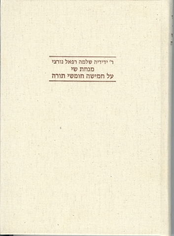

The Masora on Scripture and Its Methods
Fontes et Subsidia ad Bibliam pertinentes 7, Berlin: De Gruyter 2019, 369 pp.
המסורה הבבלית לתורה - עקרונותיה ודרכיה

תוספות רמב"ן לפירושו לתורה שנכתבו בארץ ישראל
פיקוח מדעי על מהדורת התנ"ך 'כתר ירושלים'
 כתר ירושלים א
כתר ירושלים א
 כתר ירושלים ב
כתר ירושלים ב
עריכת ספרי מחקר על המסורה
יבין

מנחת שי

עריכת קבצי מאמרים
 יבין
יבין
 עיוני מקרא
עיוני מקרא
עריכת ספרי הרב מרדכי ברויאר
 בראשית
בראשית
ישעיהו
 שיטת הבחינות
שיטת הבחינות
שותפות בעריכת כתבי-עת
מגדים
ביטאון לענייני מקרא – עורך, תשמ"ט-תש"ע
 לשוננו
לשוננו
מזכיר המערכת, תשע"א-תשפ"ב
לשוננו לעם
חבר המערכת, תשנ"א-תשע"ב
תרביץ
מזכיר המערכת, תשמ"ח-תש"ן